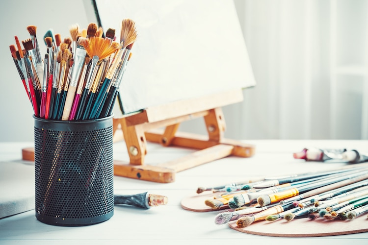

Pinceles
Si te gusta la pintura, ya sea óleo, pintura con acuarela o pintura con acrílico, los pinceles son un punto clave. Por supuesto, hay muchos aspectos a la hora de decidir qué pincel usar pero las principales son la forma, el tipo de pelo y el precio. Nos apoyamos en un equipo de profesionales dinámicos, calificados, de comprobada confiabilidad y demostrada capacidad que contribuyen con su conocimiento y experiencia al logro de nuestro principal objetivo